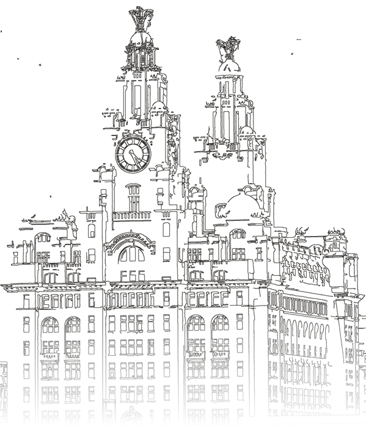
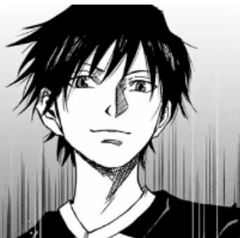
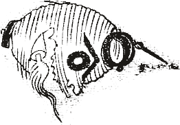

Kodansha × LFC Foundation present
It’s after dark, so the yokai are out. Come back in daylight and they’ll hide again.
SCOUSE
YOKAI
An art workshop inspired by Japanese folklore
What might be hiding in the Liverpool you know?
11:00–17:00 (TBC) · Somewhere in Liverpool city centre where yokai like to hide
The workshop
Discover yokai, the mysterious beings of Japanese folklore. Some are frightening, some mischievous, and others bring good fortune. They might live in rivers, hide in houses or take the form of everyday objects.
Join us to explore their world and imagine what a yokai might look like in yours. Create your own Scouse yokai, inspired by the places, sounds and stories you know, or reimagine a Japanese yokai in your own style.
You’ll work alongside a professional manga artist and an editor from Kodansha, with art advice from Jim Quail, Creative Director of Dorothy. Your yokai will become part of a collective book of Scouse Yokai.
What is a yokai?
- Everything has a spirit.
Long ago, people in Japan believed spirits lived in everything: mountains, rivers, trees, even old pots and umbrellas.
- Yokai give a shape to a feeling.
In the Edo period (1603–1868), people began to draw and name the strange things they felt. Walking home down a dark road, your legs suddenly won’t move. That’s sunekosuri, a little yokai rubbing against your shins.
- Yokai don’t hold grudges.
That’s what ghosts do. A yokai has no score to settle. It is spooky, but a bit funny too.
- Yokai love to give people a fright.
Leave them alone, and they will usually leave you alone.
- Yokai are everywhere.
Any place with a bit of atmosphere might have one: a dark alley, an old house, the corner you always look at twice.
Meet the yokai
Ten yokai from Japanese folklore. Tap a card to find out what it does, and where it might turn up in Liverpool.
Before the day
Bring a Liverpool story: a street, a sound, a local legend. We’ll turn it into a yokai.
The best yokai start with something that really happened to you. Before the day, ask yourself:
- Where have you heard a sound when no one was there?
- Is there an odd saying or rule that only your family knows?
- Where do lost things always turn up?
- Which corner on your way home do you always look at twice?
Then dig into the history of that place. Ask your family, look at old maps, search the local library. Every street in Liverpool has something buried in it.
A true story from the organiser
I was a baby when my family moved from Japan to London, and we lived there until I was five. We moved house a lot, always somewhere near Wimbledon Common. A kind lady who looked after us gave me her daughter’s old doll’s house. At the back of its downstairs room was a tiny door that would never open. I always wondered who lived behind it.
On the Common there is a great ring of earth banks, more than 2,000 years old. People call it Caesar’s Camp, but Caesar never came here. Nobody really knows who built it.
One night I dreamt I looked out of the window and saw a giant, bright green like a mountain, walking slowly past.
The next morning, the tiny door was open. Just a little.
What’s behind your little door?
Try it
Scouse Yokai Generator
Japanese yokai are born from objects, animals, sounds and the places themselves. Pick what yours is born from and where in Liverpool it lives, or summon a random one. Use it as a starting point, then make it your own on the day.
What you’ll do
- 1Discover
A short introduction to yokai through Edo-period picture scrolls and prints.
- 2Imagine
Find your story: a place, a sound or a memory from your Liverpool.
- 3Create
Design your own Scouse yokai, or reimagine a Japanese one in your own style, with tips from manga artist Miyato Sakurai and a Kodansha editor.
- 4Share
Share your yokai and help create a collective book of Scouse Yokai.
Details & how to join
- When
- Monday 23 November 2026, 11:00–17:00 (TBC)
- Where
- Liverpool city centre. We’ll reveal the venue to selected participants.
- Who
- Artists, art students & graduates aged 18–21
- Cost
- Free
- Bring
- Your brushes, ink, pens and a Liverpool story
- Register
- By Friday 13 November 2026
- Register your interest by Friday 13 November.
- We’ll send you an application form.
- Selected participants will hear back with details for the day.
Guest artist & art advisor

Mangaka (Japanese manga artist)
Miyato Sakurai is best known for Aoku Somero, a football manga on Kodansha’s Magazine Pocket. He played football all through school, and as a passionate Liverpool FC supporter he has drawn players and great moments from the club’s history. His artwork is on the walls of the Kodansha Corner at Anfield.
Watch Miyato Sakurai draw.
Art advisor
Jim QuailCreative Director of Dorothy, the Liverpool studio and gallery on Jordan Street.
About Kodansha
Founded in Tokyo in 1909, Kodansha is Japan’s largest publisher, producing books, magazines and manga, including AKIRA, Attack on Titan, Blue Lock and Witch Hat Atelier. As Official Global Partner of Liverpool FC, Kodansha brings Japanese stories and creativity to the city. Inspire Impossible Stories.

Burabura, a lantern that came to life. Toriyama Sekien, Hyakki tsurezure bukuro (1784)
Follow us
Follow us on Instagram
Yokai sightings around Liverpool, workshop news and a peek behind the scenes from Kodansha. Follow us, and something might follow you back.
@inspired_by_kodanshainspiRED by KODANSHA